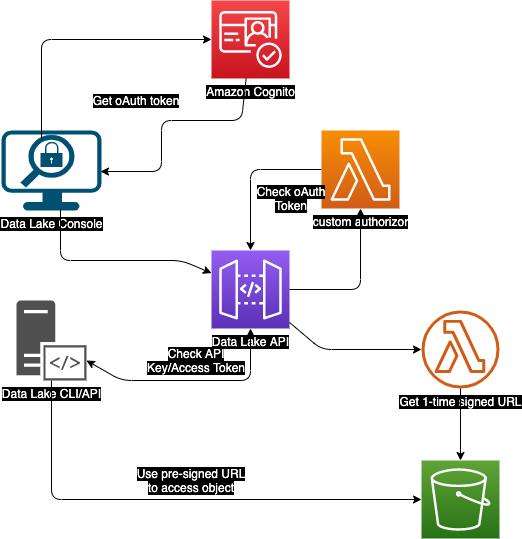
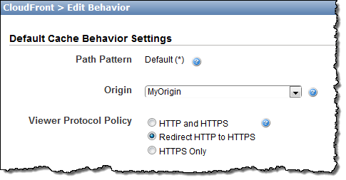
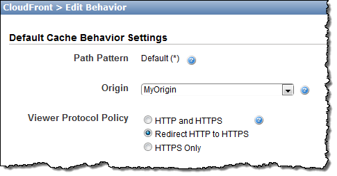
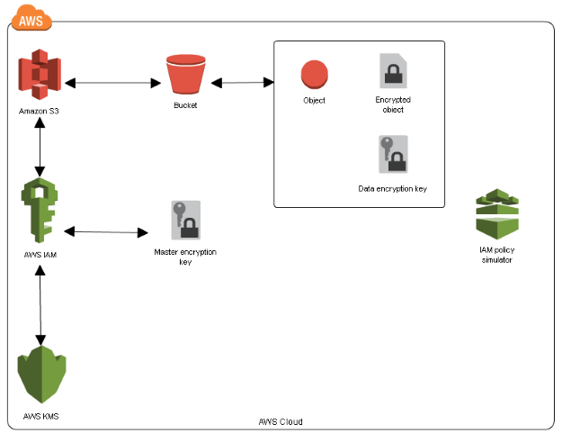

Data Lake on AWS
Derm Duncan
-
Static Console Site hosted in S3 and served via Cloudfront
- Stores data in native form in S3
-
Transforms & Analyzes Data - Glue
- Crawls Data Sources
- Identifies Data Formats
- Suggests Schemas & Transformations
-
User-defined tags add business context to datasets -
DynamoDB
- Governance policies segregate data with specifc tags
- APIs to interact with data - API Gateway
- Create Data Packages
- Upload Data
- Search for Existing Packages
- Generate Data Manifests
- Perform Admin Duties
- Auditing available - CloudWatch
Features
- Data lake reference implementation
-
User interface
- Manage Data Lake Users
- Manage Data Lake Policies
- Add/Remove Packages
- Search
- Create Manifests for additional analysis
- CLI/API for integration into existing data automation
-
Manage data storage in S3 and encrypt data at rest using KMS
-
Leverage pre-signed S3 urls or IAM roles to control access
to datasets
-
Integrates with AWS Glue & Athena to transform & analyze the
data
- Ability to federate SSO
App Security

- Console - Cognito User Pool
- API - SSL & Access Keys
- CLI - Secret Keys
Data in Transit
 

- SSL - Cloudfront serves HTTPS requests only
- Signed S3 URLs
- IAM Policies
Data at Rest

- S3 SSE-KMS
- KMS generates encryption keys
- S3 encrypts object using KMS key
- S3 stores encrypted object & encrypted key
Infrastructure Security
- CloudTrail & CloudWatch
- AWS Trusted Advisor
-
CIS Benchmarks -
prowler
- Least Privilege Principal - IAM Roles
- Reduce Attack Vectors